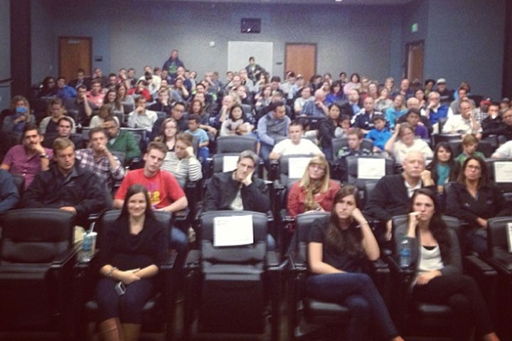
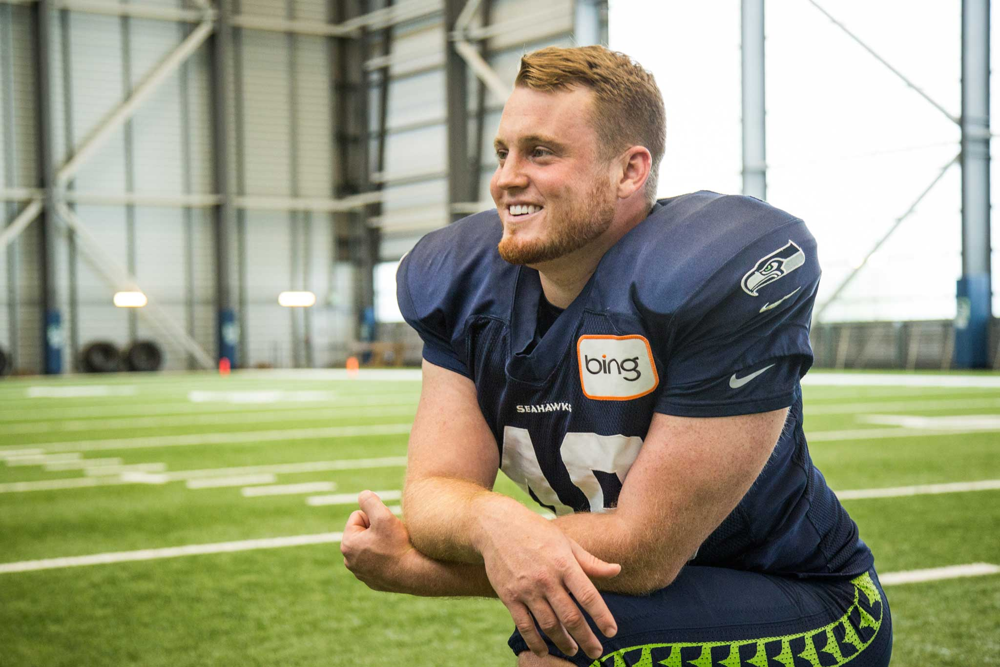

User Research

I actively participated in researching how fans interacted with Seahawk sporting events. Through focus groups and naturalistic observation, we recorded the data needed to produce a successful project.
UX Design and Mockups
I took point on all UX design processes. I did all the mockups and prepared visual pieces for enhancing user engagement. I coded the web portal that users were pointed to.
Collaboration

I connected volunteers with the project as well as managed player interactions with fans. I made people aware that volunteers needed to respect the player's personal boundaries.